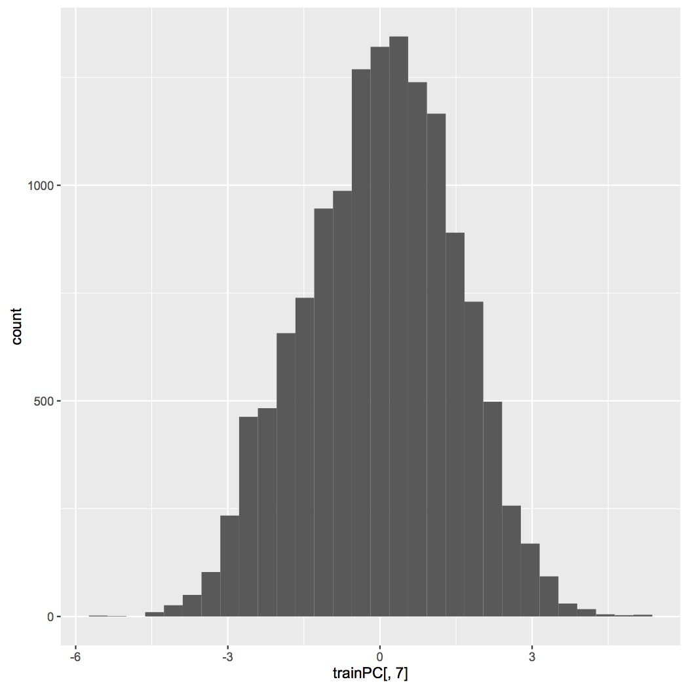

Model explanation
Looking at the data I saw that there was a lot of missing data. After splitting the data into a training, a testing and a validation set for cross validation with random sampling, I excluded all predictors which have NA in them. Further for the prediction, it is not important, how the person is called, or at what time he did the exercise. Also the infinite values in some predictors are not advantageous. I ruled these out using the is.numeric() function of R.
Afterwards I computed the correlation and found out, that a lot of the predictors are correlating:
Correlating predictors:
- "roll_belt", "yaw_belt", "total_accel_belt", "accel_belt_y", "accel_belt_z"
- "pitch_belt", "accel_belt_x", "magnet_belt_x"
- "gyros_arm_x", "gyros_arm_y"
- "accel_arm_x", "magnet_arm_x"
- "magnet_arm_y", "magnet_arm_z"
- "pitch_dumbbell", "accel_dumbbell_x"
- "yaw_dumbbell", "accell_dumbbell_z"
So I did a principal component analysis to get finally 46 predictors out of 56 before principal component analysis.
The histographs of most of the predictors seems to be quite equally distributed, like

Also there seem to be no big dependencies between the predictors.
With these 46 predictors I fitted a random forest model, which reached an in-sample accuracy of 1 and an out-of-sample accuracy of 0.9912.
The testing subset was used to choose the best model for the data, which was random forest. I also tried several other methods like decision tree or several boosting algorithms. The validation subset was used to estimate the out-of-sample accuracy.
Confusion Matrix and Statistics
Reference
Prediction A B C D E
A 836 1 0 0 0
B 4 564 1 0 0
C 0 3 509 1 0
D 0 0 4 477 1
E 0 0 0 2 539
Overall Statistics
Accuracy : 0.9942
95% CI : (0.9908, 0.9966)
No Information Rate : 0.2855
P-Value [Acc > NIR] : < 2.2e-16
Kappa : 0.9927
Mcnemar's Test P-Value : NA
Statistics by Class:
Class: A Class: B Class: C Class: D Class: E
Sensitivity 0.9952 0.9930 0.9903 0.9938 0.9981
Specificity 0.9995 0.9979 0.9984 0.9980 0.9992
Pos Pred Value 0.9988 0.9912 0.9922 0.9896 0.9963
Neg Pred Value 0.9981 0.9983 0.9979 0.9988 0.9996
Prevalence 0.2855 0.1931 0.1747 0.1632 0.1835
Detection Rate 0.2842 0.1917 0.1730 0.1621 0.1832
Detection Prevalence 0.2845 0.1934 0.1744 0.1638 0.1839
Balanced Accuracy 0.9974 0.9954 0.9943 0.9959 0.9987
R markdown
- library(caret)
# read data:
- dat = read.csv("~/Desktop/pml-training.csv")
# Split data:
- inTrain<-createDataPartition(dat$classe, p=0.7,list=FALSE)
- training <- dat[ inTrain,]
- newdat<-dat[-inTrain,]
- inTrain<-createDataPartition(newdat$classe, p=0.5,list=FALSE)
- testing<- newdat[ inTrain,]
- validation<-newdat[ -inTrain,]
# Remove NA-predictors
- a<-which(is.na(training[1,])==TRUE)
- newtrain<-training[,-a]
# Remove inf-predictors, name and Date
- b<-numeric()
- for (i in 1:(dim(newtrain)[2]-1)){
- if (is.numeric(newtrain[,i])==FALSE) b[i]<-i}
- b2<-b[-which(is.na(b))]
- newtrain<-newtrain[,-b2]
# Correlation Matrix
- M<-abs(cor(newtrain[,-(dim(newtrain)[2])]))
- diag(M)<-0
- which(M>0.8,arr.ind=T)
# PCA preprocessing
- preproc<-preProcess(newtrain[,-57],method="pca", pcaComp=46)
- trainPC=predict(preproc, newtrain[,-57])
# train RF-model
- modFit<-train(newtrain$classe ~., method="rf", data=trainPC)
# Checking Accuracy
- confusionMatrix(training$classe, predict(modFit,trainPC))
# cross-validation with testing and validation set:
# Data selection
- testing<-(testing[,-a])[,-b2]
# PCA
- testPC<-predict(preproc,testing[,-57])
# Checking accuracy
- confusionMatrix(testing$classe, predict(modFit,testPC))
# Data selection
- validation2<-(validation[,-a])[,-b2]
# PCA
- valPC<-predict(preproc,validation2[,-57])
# Out of sample accuray:
- confusionMatrix(validation$classe, predict(modFit,valPC))
# predicting the pml-testing.csv-data
- testing = read.csv("~/Desktop/pml-testing.csv")
# Data selection
- testing<-(testing[,-a])[,-b2]
# PCA
- testPC<-predict(preproc,testing[,-57])
# Prediction
- pred<-predict(modFit,testPC)